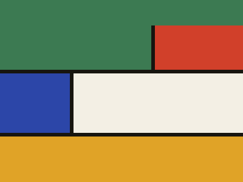

Atlante delle dodici radure
Ogni radura ha un simbolo e un colore, così si riconosce a colpo d'occhio in una mappa, in una sessione o in un elenco.
12 radure · 12 simboli

Radura 01 · scena ricorrente
Radura della Grande Quercia
Il centro politico non dichiarato del bosco. Qui si firmano le tregue e si seppelliscono i traditori, spesso nello stesso pomeriggio.
Bosco aperto
6 sessioni
Apri la scheda →
Resto dell'atlante
11 schede
Le altre radure
Il Guado Spezzato
Ponte conteso sul fiume, pedaggio in natura. Muschioverde
Villaggio di frontiera, oggi presidio della Marchesa. Roccianera
Città sotterranea del Ducato, tre livelli e nessuna finestra. Torre dell'Aquila
Rovine dell'ultimo nido occidentale delle Dinastie. Il Mercato Galleggiante
Zattere della Compagnia del Fiume, bruciate nell'Atto III. Bosco dei Sussurri
Dove gli alberi ripetono ciò che hanno sentito. La Palude di Giunco
Acqua ferma, zanzare e contrabbando. Collina del Tasso
Tana fortificata sulla via commerciale. Il Cerchio di Pietre
Dodici menhir che nessuno ha contato due volte. Radura del Canto d'Inverno
Vi si radunano i Custodi quando arriva la neve. Rovine di Forteverde
Mura crollate di un regno che non compare sulle mappe.
Ponte conteso sul fiume, pedaggio in natura. Muschioverde
Villaggio di frontiera, oggi presidio della Marchesa. Roccianera
Città sotterranea del Ducato, tre livelli e nessuna finestra. Torre dell'Aquila
Rovine dell'ultimo nido occidentale delle Dinastie. Il Mercato Galleggiante
Zattere della Compagnia del Fiume, bruciate nell'Atto III. Bosco dei Sussurri
Dove gli alberi ripetono ciò che hanno sentito. La Palude di Giunco
Acqua ferma, zanzare e contrabbando. Collina del Tasso
Tana fortificata sulla via commerciale. Il Cerchio di Pietre
Dodici menhir che nessuno ha contato due volte. Radura del Canto d'Inverno
Vi si radunano i Custodi quando arriva la neve. Rovine di Forteverde
Mura crollate di un regno che non compare sulle mappe.
Non ancora pubblicate
2 luoghi
Bozze
Prova di palette
12 colori · 12 simboli
Le dodici tinte dell'atlante
Vermiglio
Arancio
Ocra
Oliva
Bosco
Turchese
Cielo
Cobalto
Indaco
Prugna
Rosa
Argilla